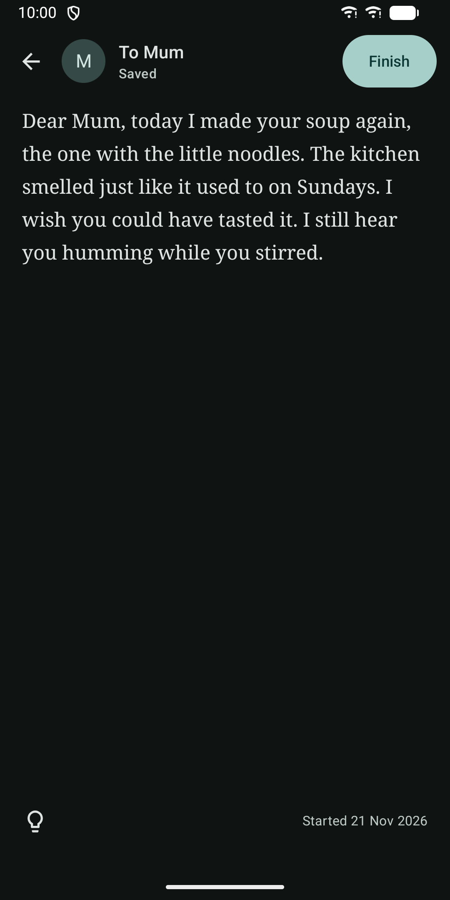
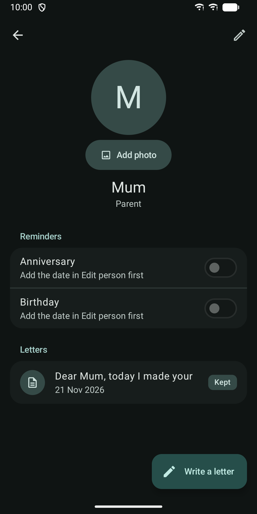

Diario de cartas de duelo
Escribe cartas no enviadas a quien perdiste. Privadas y cifradas en tu móvil.






Acerca de la app
Escribe las cartas que no llegaste a enviar. El Diario de cartas de duelo es un lugar tranquilo y privado para escribir cartas no enviadas a un padre, una pareja, un hijo, un hermano, un amigo o una mascota que has perdido. Cada carta empieza con «Querido/a [nombre]», se guarda sola mientras escribes y se queda únicamente en tu móvil. La app no tiene permiso de internet, así que no puede enviar tus cartas a ninguna parte. No hay cuenta, ni nube, ni rastreo, ni IA. Escribe a tu ritmo - Añade a la persona que echas de menos, con su relación y, si quieres, su cumpleaños y la fecha en que murió. - Añade una foto si lo deseas. Se recorta en círculo y se guarda cifrada, sin datos de ubicación ni de la cámara. - Un editor sencillo y tranquilo que guarda automáticamente. - Propuestas suaves y opcionales para cada tipo de relación. Las mascotas tienen las suyas. - Sin rachas, sin contadores, sin presión. Vuelve cuando quieras. Termina cada carta a tu manera - Conservar: se queda en tu diario y puedes seguir escribiendo. - Sellar: pasa a ser de solo lectura. Puedes abrirla de nuevo más tarde. - Soltar: déjala ir. Se elimina para siempre después de confirmarlo. Privado desde el diseño - Todo se guarda en una base de datos cifrada. La clave está protegida por el hardware seguro de tu móvil. - Bloqueo de la app opcional con huella, rostro o PIN del dispositivo. Mientras está activado, se bloquean las capturas de pantalla y la vista previa en aplicaciones recientes. - Los recordatorios de cumpleaños y aniversarios están desactivados por defecto. Si los activas, la notificación solo dice «Un momento para ti», nunca un nombre ni una fecha, y se oculta en la pantalla de bloqueo. - El widget de la pantalla de inicio nunca muestra el texto de las cartas. Con el bloqueo activado solo muestra un botón sencillo «Escribir». - Copias de seguridad cifradas con una frase de contraseña que tú eliges, guardadas donde quieras. Restáuralas en un móvil nuevo. Qué incluye - Disponible desde el principio: una persona, propuestas básicas, recordatorios, bloqueo de la app y copia de seguridad cifrada con restauración. - Requiere el desbloqueo de pago único dentro de la app: más de una persona, todas las propuestas y exportación a PDF de una carta o de todas las cartas a una persona. No es una suscripción. La compra la comprueba la app de Google Play Store. El Diario de cartas de duelo sigue sin tener permiso de internet. Esta app no sustituye el apoyo profesional. Si lo estás pasando mal, acude a alguien de confianza o a un servicio de ayuda local.